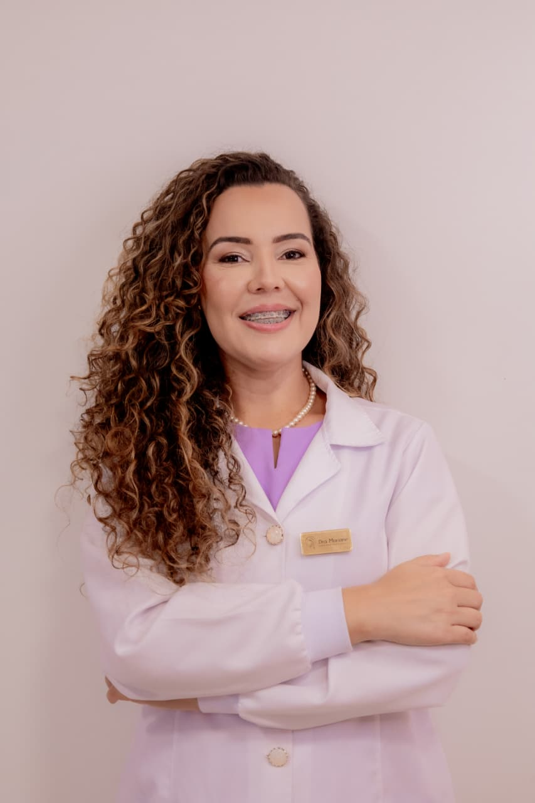

Mentoria CRIOPEIM · Para profissionais
Aprenda comigo. Estruture seu negócio. Posicione-se no mercado de vasinhos.
Uma mentoria individual que une técnica, gestão e estratégias de captação de pacientes para profissionais que desejam atuar no nicho de secagem de vasinhos.
- IndividualUma aluna por vez
- Prática realSupervisionada em pacientes
- NegócioGestão e captação de pacientes
- ExclusividadeProtocolo CRIOPEIM na sua clínica, conforme contrato

CRBM-PR 1474Biomédica estetaPara quem é
Para profissionais que querem ir além da técnica
A mentoria é exclusiva para profissionais da saúde legalmente habilitados para realizar o procedimento.
-
01
Quer começar no nicho
Você quer atuar com secagem de vasinhos com segurança, desde o primeiro atendimento.
-
02
Já atende e quer evoluir
Você já faz secagem e quer um protocolo mais confortável e com resultados visíveis.
-
03
Quer encher a agenda
Você sabe a técnica, mas precisa se posicionar e atrair pacientes de forma constante.
O que você aprende
Três pilares para crescer no mercado
-
Técnica
- Protocolo CRIOPEIM do início ao fim
- Avaliação e identificação dos tipos de vasinhos
- Prática supervisionada em pacientes reais
-
Gestão
- Estruturação do seu negócio
- Organização do atendimento
- Experiência da paciente na clínica
-
Captação
- Posicionamento no mercado de vasinhos
- Estratégias de captação de pacientes
- Como apresentar seus resultados
Vagas individuais.
Garanta a sua formação
Como a mentoria é feita com uma aluna por vez, as datas são limitadas. Fale com a gente e agende a sua.
Quero fazer parte